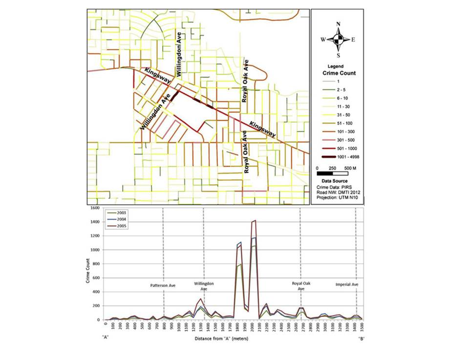
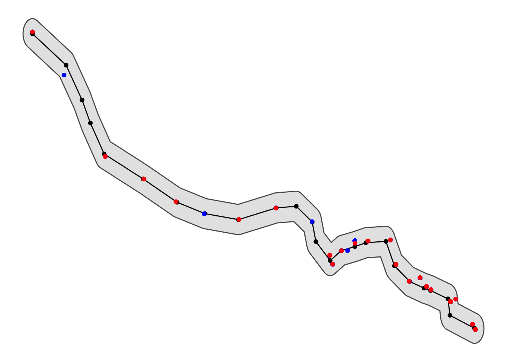
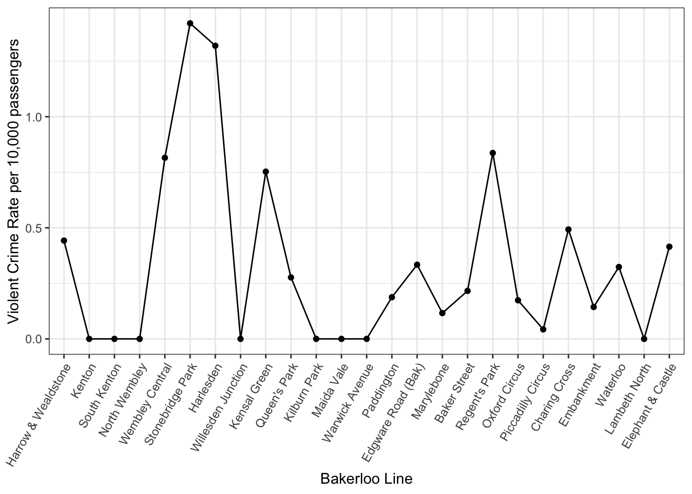
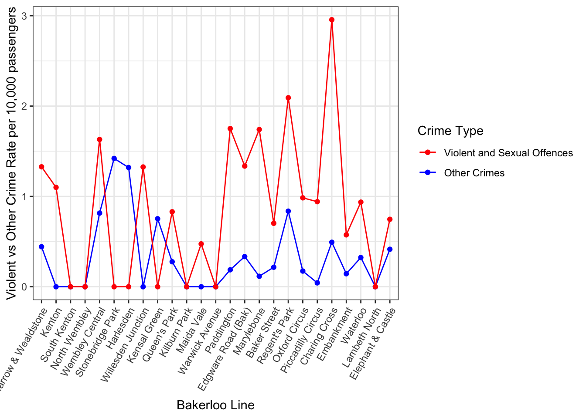

A while back I posted this tutorial about hot routes for visualising crime along a network (eg tube line). But I mentioned at the end, it may not always be necessary to include the geographic component of this visualisation. Instead, another approach could be to make use of street profile analysis introduced by Valerie Spicer, Justin Song, Patricia Brantingham, Andrew Park, and Martin Andresen in their 2016 paper ‘Street profile analysis: A new method for mapping crime on major roadways’ published in Applied Geography.
Street profile analysis was initially developed as a method for visualising temporal and spatial crime patterns along major roadways in metropolitan areas. The idea is that the geographical location of the street may not actually be as important as the ability to visualise data from multiple years in a comparable way. So the approach is to treat the street in question as the x-axis of a graph, with a start point (A) and end point (B) breaking it into some interval (I think they use 100m intervals). Then, you can visualise how crime is distributed along this street by plotting count or rate of crimes on the y-axis, and have multiple lines for different years for example. You can add context by re-introducing some key intersections, or other points of interest.
In their paper, Spicer and colleagues demonstrate this using the example of Kingsway Avenue in Vancouver, BC

When I was working as a crime analyst at TfL, I adapted this method to visualise fare evasion along various bus routes, but instead of breaking up the route into 100m intervals from start to finish, I used bus stops to represent ticks along the axis. Also instead of using crime from different years, I compared data from different sources. It was very easy to adapt street profile analysis in this way, and it proved a simple yet powerful way to tell the story of how fare evasion was distributed along the specific bus line. So for anyone who wants to implement this in their work, I tought it could be helpful to demonstrate in a quick tutorial how to carry out Street Profile Analysis using R.
Overview
Like last time, let’s start with a breakdown of the steps we will need to follow.
- Step 1: Prepare the network layer
- Step 2. Link crime events to points of interest
- Step 3: Calculate a rate
- Step 4: Visualise the results
Much like for the hot routes tutorial, I will use the example dataset of the London Underground network, spatial data for which can be downloaded using the Transport for London API, and crime from British Transport Police for February 2020 available via data.police.uk.
Step 1: Prepare the network layer
This step is the same as last week’s tutorial so I won’t dwell on it here, essentially we get the stops for the bakerloo line from the TfL API, make it an sf object, and create a connected line. I’ve created a function that does this all called getBakerlooLine() and one called getBakerlooStops() which I just run here. If you want to see the function it is on github here but better to have a look at step 1 of the hot routes tutorial for a breakdown and explanation.
library(rjson)
library(dplyr)
library(sf)
bakerloo_stops <- getBakerlooStops()## Warning in readLines("https://api.tfl.gov.uk/line/bakerloo/route/sequence/
## outbound"): incomplete final line found on 'https://api.tfl.gov.uk/line/
## bakerloo/route/sequence/outbound'bakerloo_line <- getBakerlooLine(bakerloo_stops)We can plot these to make sure everything looks okay:
library(ggplot2)
ggplot()+
geom_sf(data = bakerloo_stops) +
geom_sf(data = bakerloo_line) +
theme_void() +
theme(panel.grid.major = element_line(colour = "white"))Yepp, looking good! In this case we don’t really need to split our line into segments, so that’s it for prepping our network layer!
Step 2. Link crime events to points of interest
For step 2, we start once again with importing some data from the British Transport Police.
crimes <- read.csv("data/2020-02-btp-street.csv")
crimes_sf <- st_as_sf(crimes, coords = c("Longitude", "Latitude"), crs = 4326)We also want to subset this larger dataset of crimes to only those that are on or near the Bakerloo line
bakerloo_line_buff <- st_buffer(bakerloo_line, 0.005)## Warning in st_buffer.sfc(bakerloo_line, 0.005): st_buffer does not correctly
## buffer longitude/latitude dataviolent_crimes <- st_intersection(bakerloo_line_buff, crimes_sf %>% filter( Crime.type== "Violence and sexual offences"))
other_crimes <- st_intersection(bakerloo_line_buff, crimes_sf %>% filter( Crime.type != "Violence and sexual offences"))And make sure it’s all looking good
ggplot()+
geom_sf(data = bakerloo_line_buff) +
geom_sf(data = bakerloo_line) +
geom_sf(data = bakerloo_stops) +
geom_sf(data = other_crimes, col = "blue") +
geom_sf(data = violent_crimes, col = 'red') +
theme_void() +
theme(panel.grid.major = element_line(colour = "white"))
Now we can snap each crime point to the closest tube station using the st_nearest_feature() function. This will return, for each point, the ID of the nearest segment. We can do this once for violent crime and once for other crimes:
violent_crimes_closest <- st_nearest_feature(violent_crimes, bakerloo_stops)
other_crimes_closest <- st_nearest_feature(other_crimes, bakerloo_stops)If we want, we can have a look at the results. Let’s see for violent crimes:
violent_crimes_closest## [1] 21 21 25 25 13 13 20 15 14 23 23 23 23 23 23 23 23 23 23 23 23 23 23 23 23
## [26] 23 23 23 12 12 12 12 12 17 1 1 1 1 3 9 9 7 7 7 7 7 7 7 7 7
## [51] 19 19 19 19 19 19 11 11 11 11 8 11 11 2 2In the results above, we see printed the stop ID for the closest stop to each crime incident.
Now we need to count the frequency of each stop ID (as this tells us the number of crimes that are close to it, therefore assigned to it), and join this with out stops dataframe:
library(tidyr)
#make list of nearest into df of frequency
stops_w_vcrimes <- as.data.frame(table(violent_crimes_closest))
#join to sections object and replace NAs with 0s also rename Freq variable to num_crimes
bakerloo_stops <- left_join(bakerloo_stops %>% mutate(stopid = rownames(.)),
stops_w_vcrimes,
by = c( "stopid" = "violent_crimes_closest")) %>%
mutate(Freq = replace_na(Freq, 0)) %>%
rename(num_violent_crimes = Freq)## Warning: Column `stopid`/`violent_crimes_closest` joining character vector and
## factor, coercing into character vector#do this again for other crimes
stops_w_ocrimes <- as.data.frame(table(other_crimes_closest))
bakerloo_stops <- left_join(bakerloo_stops,
stops_w_ocrimes,
by = c( "stopid" = "other_crimes_closest")) %>%
mutate(Freq = replace_na(Freq, 0)) %>%
rename(num_other_crimes = Freq)## Warning: Column `stopid`/`other_crimes_closest` joining character vector and
## factor, coercing into character vectorGreat now we have a dataframe of each stop and the number of crimes that happened closest possibly to it. We could make a street profile of it with this count (in fact we will in a moment) but first let’s discuss about rates!
Step 3: Calculate a rate
In order to calculate a crime rate for each station, we need to think about what is an acceptable denominator. How can we best estimate the number of opportunities present for the particular crime type we are interested in, and how might that be captured in some available data set?
In an upcoming paper “Alternative denominators in transport crime rates” the pre-print for which is available on OSF here we considered the various types of denominators that may be available to crime analysts focusing on estimating ambient populations to calculate crime risk. These can be:
- residential population in the area surrounding the station (available from the Census)
- workplace population in the area surrounding the station (also available from the Census)
- number of lines passing through each station (available from station information, or even a network map)
- number of trains passing through each station (available from station information, maybe a timetable)
- number of passengers entering/exiting each station (available from transit authority, maybe via a survey like the Rolling Origin Destination Survey, or smartcard data (eg Oyster card in London))
and possibly some other options that we have not thought of.
Here, for simplicity we can use the Rolling Origin Destination Survey (RODS) data. We can download this directly from TfL API portal. It is a zip file, so first we download this using download.file() function, and unzip it into a subfolder called “data” using the unzip() function. We delete the zip file after extracting, because we don’t need it anymore using the unlink() function.
#get rods data from TfL API
download.file("http://tfl.gov.uk/tfl/syndication/feeds/rods.zip", destfile = "./data/rods.zip")
#unzip zip file
unzip("data/rods.zip", exdir = "./data")
#delete zip file
unlink("data/rods.zip")Once we have our data, we want specifically the excel file “Total entries and exits by borough-time of day 2017.xls”. The entry and exit data sets are two separate sheets in this excel file, so we will have to read them in one sheet at a time, using read_xls() function from the readxl package. From having seen the data before, I also know that 1) the variable names are in line 4 so we can skip up to there (the skip= argument in the read_xls() function), 2) that the names are messy, so we clean them up using the clean_names() function in the janitor package, and 3) that for some reason the ‘station’ variable is in two columns, so we have to name these as station number and station name using rename() function in the dplyr library (loaded earlier). It seems like a lot of cleaning of the data, but it could be worse, and there will be more cleaning later…
library(readxl)
library(janitor)
#load entries and exits data
#first entries
rods_entries <- read_xls("data/RODS_2017/Misc/Total entries and exits by borough-time of day 2017.xls", sheet = "entries",
skip = 4, col_names = TRUE) %>% clean_names() %>% rename(stn_num = station,
stn_name = x3)
#then exits
rods_exits <- read_xls("data/RODS_2017/Misc/Total entries and exits by borough-time of day 2017.xls", sheet = "exits",
skip = 4, col_names = TRUE) %>% clean_names() %>% rename(stn_num = station,
stn_name = x3)Then finally we can link the entry and exit data together with left_join() from dplyr, and sum them together to get the whole day’s worth of entries and exits (because we don’t care about time of day for our purposes here) using group_by() and summarise(), then create a final variable called total_pax using the mutate() function. The total_pax variable that tells us how many trips we can expect to go through that station on a given day, giving us a nice denominator to calculate crime rate!
rods <- rods_exits %>%
left_join(., rods_entries) %>% # join up the exit and entry data
group_by(borough, stn_num, stn_name) %>% # sum all time periods within the day
summarise(total_exiting = sum(number_exiting),
total_entering = sum(number_entering)) %>%
filter(stn_num != "Total for borough") %>% # remove the borough totals
mutate(total_pax = total_exiting + total_entering) # create grand total of pax tripsNow we have our denominator for calculating the crime rate! Let’s join it to our Bakerloo Line stations to do so.
Here we have another stumbling block (or teachable moment?) To join our data, we need corresponding columns in each one. For example here the denominator dataset (rods) and the stops with the crime data (bakerloo_stops) both contain a column that has station names (stn_name). Normally, we would expect of course that the stn_name variable in both data sets should match; ie that “Elephant & Castle” appears in both data sets, spelled the same way. How naive of us… if we go ahead and try to join our datasets under this assumption, 10 stations will be unmatched. See for yourself:
bakerloo_stops_try1 <- left_join(bakerloo_stops, rods)Ha-ha this dataset has 10 NA values, that is for 10 stations we did not find a corresponding match! I told you there will be more data cleaning to be doe… Well we can have a look at which stations don’t match for ourselves:
bakerloo_stops_try1 %>% filter(is.na(total_pax)) %>% select(stn_name)## Simple feature collection with 10 features and 1 field
## geometry type: POINT
## dimension: XY
## bbox: xmin: -0.194232 ymin: 51.49881 xmax: -0.112315 ymax: 51.53498
## CRS: EPSG:4326
## stn_name geometry
## 1 Baker Street Underground Station POINT (-0.15713 51.52288)
## 2 Embankment Underground Station POINT (-0.122666 51.50706)
## 3 Edgware Road (Bakerloo) Underground Station POINT (-0.17015 51.5203)
## 4 Kilburn Park Underground Station POINT (-0.194232 51.53498)
## 5 Lambeth North Underground Station POINT (-0.112315 51.49881)
## 6 Maida Vale Underground Station POINT (-0.185758 51.52978)
## 7 Oxford Circus Underground Station POINT (-0.141903 51.51522)
## 8 Piccadilly Circus Underground Station POINT (-0.133798 51.51005)
## 9 Regent's Park Underground Station POINT (-0.146444 51.52334)
## 10 Warwick Avenue Underground Station POINT (-0.183783 51.52326)We may notice a pattern, they all seem to have the suffix “Underground Station” in our bakerloo_stops dataset but not in the rods data. Let’s get rid of this, and try to match again:
bakerloo_stops$stn_name <- gsub(" Underground Station", "", bakerloo_stops$stn_name)
bakerloo_stops_try2 <- left_join(bakerloo_stops, rods)NEARLY THERE! Now we have only one station which did not join. Which is it?
bakerloo_stops_try2 %>% filter(is.na(total_pax)) %>% select(stn_name)## Simple feature collection with 1 feature and 1 field
## geometry type: POINT
## dimension: XY
## bbox: xmin: -0.17015 ymin: 51.5203 xmax: -0.17015 ymax: 51.5203
## CRS: EPSG:4326
## stn_name geometry
## 1 Edgware Road (Bakerloo) POINT (-0.17015 51.5203)Ahhh it’s “Edgware Road (Bakerloo)”, which apparently, in the rods dataset is labelled “Edgware Road (Bak)”. *sigh* One last try:
bakerloo_stops$stn_name <- gsub("Bakerloo", "Bak", bakerloo_stops$stn_name)
bakerloo_stops <- left_join(bakerloo_stops, rods)Tadaaa! And now we can calulate the rate by dividing the number of crimes (num_crimes) by the total number of daily passengers (total_pax), and let’s times by 10,000 to get crimes per 10,000 pax for each station.
bakerloo_stops$violent_crime_rate <- bakerloo_stops$num_violent_crimes/ bakerloo_stops$total_pax * 10000
bakerloo_stops$other_crime_rate <- bakerloo_stops$num_other_crimes/ bakerloo_stops$total_pax * 10000Great now we have a rate! Our top station for violent and sexual offences is Stonebridge Park, which has 1.42 such crimes per 10,000 passengers, while our lowest are the stations which recorded no such crimes (Kilburn Park, Lambeth North, Maida Vale, Warwick Avenue, Kenton, North Wembley, South Kenton, Willesden Junction). Great, now let’s actually visualise crime along the stations of the Bakerloo Line using Street Profile Analysis!
Step 4: Visualise the results
Now we have (almost) everything we need to visualise crime along the Bakerloo line using Street Profile Analysis. What we want to do, is imagine the Bakerloo line is the x axis, and then use the y axis to show the crime rate. Of course for this, we want to know the order in which the stations follow each other.
Annoyingly, the TfL API doesn’t actually have any sort of sequence information with the stops ( see discussion by other users here ) so we have to make our own lookup table:
bakerloo_order <- data.frame( stop_num = c(1:25),
stn_name = c("Harrow & Wealdstone",
'Kenton',
'South Kenton',
'North Wembley',
'Wembley Central',
'Stonebridge Park',
'Harlesden',
'Willesden Junction',
'Kensal Green',
"Queen's Park",
'Kilburn Park',
'Maida Vale',
'Warwick Avenue',
'Paddington',
'Edgware Road (Bak)',
'Marylebone',
'Baker Street',
"Regent's Park",
'Oxford Circus',
'Piccadilly Circus',
'Charing Cross',
'Embankment',
'Waterloo',
'Lambeth North',
'Elephant & Castle')
)Now we can join this to the original dataframe to have a sequence to order our stops by:
bakerloo_stops <- left_join(bakerloo_stops, bakerloo_order)And then we can use this to order our stop names, and finally present the Street (or rather Route) Profile for the Bakerloo line considering violent and sexual offences:
ggplot(bakerloo_stops, aes(x = reorder(stn_name, stop_num), y = violent_crime_rate, group = line)) +
geom_point() +
geom_line() +
xlab("Bakerloo Line") +
ylab("Violent Crime Rate per 10,000 passengers") +
theme_bw() +
theme(axis.text.x = element_text(angle = 60, hjust = 1))
Very cool! Now what is great about this is you can compare different things here. For example, we could compare violent crime vs other crimes:
ggplot() +
geom_point(data = bakerloo_stops, aes(x = reorder(stn_name, stop_num), y = violent_crime_rate, group = line, col = "Violent and Sexual Offences")) +
geom_line(data = bakerloo_stops, aes(x = reorder(stn_name, stop_num), y = violent_crime_rate, group = line, col = "Violent and Sexual Offences")) +
geom_point(data = bakerloo_stops, aes(x = reorder(stn_name, stop_num), y = other_crime_rate, group = line, col = "Other Crimes")) +
geom_line(data = bakerloo_stops, aes(x = reorder(stn_name, stop_num), y = other_crime_rate, group = line, col = "Other Crimes")) +
xlab("Bakerloo Line") +
ylab("Violent vs Other Crime Rate per 10,000 passengers") +
theme_bw() +
theme(axis.text.x = element_text(angle = 60, hjust = 1)) +
scale_colour_manual(values=c("red","blue"), labels = c("Violent and Sexual Offences", "Other Crimes"), guide="legend", name="Crime Type")
We can see they show slightly different patterns along the route, and this may be something we want to investigate further!
We could also compare different data sources (for example for the bus routes I compared fare evasion data from three different sources!), or from different times (like the original paper suggests).
Final remarks
This has been one work-through of using Street Profile Analysis to visualise crime rate across a network like a tube line. This could be applied to any sort of route (eg bus route, or street network like the original paper describes) following very similar steps. As always, if there are any comments questions suggestions ammendments just reach out on twitter ( [@r_solymosi](https://twitter.com/r_solymosi) ) or by email reka.solymosi@manchester.ac.uk.